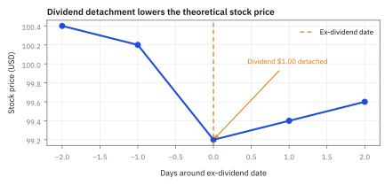
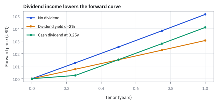
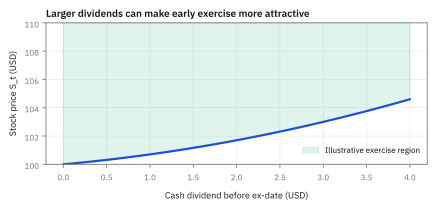
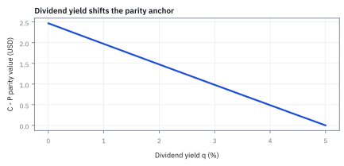

19.4 Dividends in the Formulas
รายได้ระหว่างทางลด forward price และเปลี่ยนสิทธิ early exercise
หุ้นราคา \$100 จะจ่ายปันผล \$1 ในอีก 3 เดือน คุณล็อกซื้อหุ้นนี้ล่วงหน้า 6 เดือนด้วย forward ขณะที่ดอกเบี้ย 5% ต่อปี คนถือหุ้นได้ปันผล คนถือ forward ไม่ได้ ราคา forward ที่ยุติธรรมคือเท่าไร?
เฉลย: \$101.52 ต่ำกว่า \$102.53 ของหุ้นที่ไม่จ่ายปันผลอยู่ \$1.0126 มากกว่าปันผล \$1 เล็กน้อย เพราะคนถือหุ้นจริงเอาปันผลไปฝากกินดอกเบี้ยต่อได้อีก 3 เดือน
ศัพท์ที่ต้องใช้ก่อนเริ่ม
- dividend
- เงินสดที่บริษัทจ่ายให้ผู้ถือหุ้นระหว่างทาง ใช้เป็นรายได้ของผู้ถือ underlying และต้องหักออกจาก cost of carry
- ex-dividend date
- วันที่ผู้ซื้อหุ้นใหม่ไม่มีสิทธิรับ dividend รอบนั้น ใช้ระบุจุดที่ราคาหุ้นมักปรับลงตามเงินปันผลที่เพิ่งแยกออก
- forward
- สัญญาล็อกราคาซื้อขาย underlying ในอนาคตและมักชำระครั้งเดียว ใช้ดูผลของ dividend ต่อราคาล่วงหน้าโดยตรง
- call option
- สิทธิซื้อ underlying ที่ strike ตามเงื่อนไขสัญญา ใช้รับประโยชน์จากราคาขึ้นโดย downside จำกัดที่ premium
- put option
- สิทธิขาย underlying ที่ strike ตามเงื่อนไขสัญญา ใช้ป้องกันราคาลงโดย downside ของผู้ซื้อจำกัดที่ premium
- strike
- ราคาที่ผู้ถือ option ใช้ซื้อหรือขาย underlying ตามสัญญา ใช้คำนวณ intrinsic value และ payoff
- underlying
- หุ้น ดัชนี หรือสินทรัพย์ที่ option และ forward อ้างอิง ใช้เป็นตัวแปรราคาหลักของ derivative
- expiry
- วันสิ้นสุดสิทธิของ option หรือวันที่ forward ชำระ ใช้กำหนด horizon และเวลาที่เหลือของสูตร
- present value
- มูลค่าของเงินอนาคตเมื่อ discount กลับมาที่วันนี้ ใช้เปรียบเทียบ cash dividend กับต้นทุนเงินทุนในวันเดียวกัน
- Black-Scholes
- ตัวแบบ closed-form สำหรับราคา European option ภายใต้สมมติฐาน volatility และอัตราดอกเบี้ย ใช้เป็น benchmark ก่อนปรับข้อจำกัดของ American exercise
- put-call parity
- ความสัมพันธ์ no-arbitrage ระหว่าง call, put, spot, strike และ discount factor ใช้ตรวจว่าราคา option สองฝั่งสอดคล้องกันหรือไม่
- American option
- option ที่ exercise ได้ทุกเวลาก่อนหรือใน expiry ใช้ตัดสินใจเรื่อง early exercise ซึ่ง European option ทำไม่ได้
- early exercise
- การใช้สิทธิ American option ก่อน expiry ใช้เมื่อประโยชน์จากการรับ underlying หรือ dividend มากกว่ามูลค่าการรอ
- discount factor
- ตัวคูณที่แปลงเงินอนาคตเป็น present value ใช้ discount strike และ dividend ใน put-call parity
- normal distribution
- distribution รูประฆังที่ใช้สร้าง cumulative probability ใน Black-Scholes เพื่อเปลี่ยน d_1 และ d_2 ให้เป็นน้ำหนักของ payoff
- payoff
- เงินที่ option จ่ายตามราคาของ underlying และ strike ใช้ตรวจผลลัพธ์เมื่อถึง expiry หรือ exercise
- Merton model
- ตัวแบบ Black-Scholes ที่ปรับด้วย continuous dividend yield โดย Robert C. Merton ใช้ตั้งราคา option บนหุ้นที่จ่ายปันผล ดัชนีหุ้น และอัตราแลกเปลี่ยน
- replicating portfolio
- พอร์ตการลงทุนเลียนแบบที่ประกอบด้วย underlying และเงินฝากหรือพันธบัตรไร้ความเสี่ยง ให้ payoff เท่ากับ derivative ในทุกสภาวะตลาด ใช้หา fair price จากหลักการ no-arbitrage
สัญกรณ์และหน่วย
| สัญลักษณ์ | ความหมาย | หน่วย |
|---|---|---|
| $S_0$ | spot price ของหุ้น ณ วันนี้ | USD ต่อหุ้น |
| $D_0$ | present value ของ cash dividends ก่อน expiry | USD ต่อหุ้น |
| $q$ | continuous dividend yield ที่สมมติคงที่ | ต่อปี |
| $r$ | continuously compounded risk-free rate | ต่อปี |
| $K$ | strike price ของ option | USD ต่อหุ้น |
| $T$ | เวลาถึง expiry | ปี |
| $C_0,P_0$ | ราคา call และ put ณ วันนี้ | USD ต่อหุ้น |
| $\sigma$ | volatility ต่อปีใน Black-Scholes | ต่อปีแบบ annualized |
| $c$ | proportional dividend ต่องวดใน binomial model | สัดส่วนต่อราคาหุ้น |
| $u,\ d,\ R$ | ตัวคูณราคาขาขึ้น ขาลง และตัวคูณเงินฝากต่องวด | unitless |
| $p$ | risk-neutral probability ของขาขึ้น เมื่อมีปันผล | unitless |
| $x,\ y$ | จำนวนหุ้นและเงินสดในพอร์ตเลียนแบบ | หุ้น และ USD |
| $n_0,\ n_T$ | จำนวนหุ้นที่ถือวันนี้และวันส่งมอบ เมื่อเอาปันผลซื้อหุ้นเพิ่ม | หุ้น |
| $t_D$ | เวลาที่จ่ายเงินสดปันผล | ปี |
| $F_0$ | forward price ณ วันนี้สำหรับส่งมอบที่เวลา T | USD ต่อหุ้น |
ที่มาที่ไป: รายละเอียดเล็ก ๆ ที่ทำให้ราคาผิดอย่างเงียบ ๆ
สูตรตั้งราคาในบทที่ 13 สมมติว่าหุ้นไม่จ่ายเงินปันผล ซึ่งเป็นสมมติฐานที่ไม่จริงสำหรับหุ้นส่วนใหญ่
Robert Merton แสดงวิธีใส่เงินปันผลเข้าไปในสูตรตั้งแต่ปี 1973 โดยมองว่ามันเป็นการรั่วไหลของมูลค่า ออกจากราคาหุ้นอย่างต่อเนื่อง
แต่การประมาณแบบต่อเนื่องนั้นใช้ได้ดีกับดัชนีที่มีหุ้นหลายร้อยตัวจ่ายกระจายกันทั้งปี และใช้ได้แย่กับหุ้นตัวเดียวที่จ่ายเป็นก้อนปีละสองครั้ง
ความต่างนั้นสำคัญมากสำหรับสัญญาอายุสั้นที่คร่อมวันจ่ายปันผลพอดี และเป็นเหตุผลหลักที่ทำให้คนใช้สิทธิ์ก่อนกำหนดในทางปฏิบัติ
จุดกำเนิดทางประวัติศาสตร์: จากสมมติฐานไร้ปันผลของ Black-Scholes สู่ model ของ Merton และ Black
เมื่อ Fischer Black และ Myron Scholes ตีพิมพ์สูตรตั้งราคา option ในปี 1973 พวกเขากำหนดสมมติฐานว่าหุ้นอ้างอิงไม่มีการจ่ายเงินปันผลเลยตลอดอายุสัญญา เพื่อให้โครงสร้างคณิตศาสตร์ของ partial differential equation (PDE) ไม่มีความซับซ้อน
แต่ในตลาดจริง หุ้นส่วนใหญ่ในดัชนีหลักอย่าง S&P 500 มีการจ่ายเงินสดปันผลอย่างสม่ำเสมอ หากนำสูตรดั้งเดิมที่ไม่มีปันผลไปใช้ ราคา call option บนหน้าจอจะสูงเกินจริง และฝั่ง put option จะต่ำเกินจริง เพราะแบบจำลองละเลยการลดลงของราคาหุ้นเมื่อจ่ายปันผล
ในปีเดียวกัน Robert C. Merton ได้ขยายแบบจำลองในบทความ Theory of Rational Option Pricing โดยมองว่าเงินปันผลเปรียบเสมือนการรั่วไหลของมูลค่า (dividend leakage) ออกจากราคาหุ้นอย่างต่อเนื่องในอัตรา $q$ ซึ่งนำไปสู่ Merton model ที่ใช้กันแพร่หลายในตลาดดัชนีและอัตราแลกเปลี่ยน
ต่อมาในปี 1975 Fischer Black ได้เสนอแนวทางสำหรับกรณีเงินสดปันผลจ่ายเป็นก้อนเดี่ยว (discrete cash dividend) และชี้ให้เห็นว่าเงินปันผลก้อนโตคือแรงจูงใจเดียวที่ทำให้การใช้สิทธิ์ American call ก่อนกำหนด (early exercise) เกิดขึ้นได้อย่างคุ้มค่าทางเศรษฐศาสตร์
เงินปันผลอยู่ฝั่งไหนของการถือหุ้น
ถ้าซื้อหุ้นวันนี้ ผู้ถือได้รับ dividend ก่อน expiry แต่คนที่ล็อกซื้อหุ้นผ่าน forward ไม่ได้รับเงินก้อนนั้นระหว่างทาง ต้นทุนของ forward จึงต้องหัก present value ของ dividend ออกก่อน ตัวอย่างนี้ใช้ cash dividend ที่รู้จำนวนและวันจ่ายเพื่อให้เห็นกลไกชัด; ถ้า dividend ไม่แน่นอน ต้องใช้ forecast และ model risk เพิ่ม
ในมุมมองของแบบจำลอง หุ้นที่มีการจ่ายเงินปันผลคือพอร์ตที่ประกอบด้วยหุ้น ณ วันสิ้นสุด บวกกับสิทธิในการรับกระแสเงินสดปันผลระหว่างทาง มูลค่าหุ้น $S_0$ ในวันนี้จึงเท่ากับผลรวมของราคาคิดลดของหุ้นและมูลค่าปัจจุบันของเงินปันผลทั้งหมด
ขั้นที่ 1 — การสร้างพอร์ต Cash-and-Carry เมื่อมีเงินปันผลเป็นก้อน
แต่ละแถวอ่านว่าเงินสดวันนี้ ลูกศร เงินสดวันส่งมอบ การคำนวณนี้ลบล้างความเชื่อผิด ๆ ที่ว่าเงินปันผลเป็นผลพลอยได้ที่ให้เปล่า ในตลาด derivative เงินปันผลคือส่วนหนึ่งของมูลค่าหุ้นที่หลุดลอยออกมาระหว่างทาง
ผู้ซื้อสัญญา forward ไม่ได้รับเงินสดก้อนนี้ จึงไม่ควรต้องแบกรับภาระดอกเบี้ยของมูลค่าส่วนที่ตนเองไม่ได้ครอบครอง การหัก $D_0$ ออกจาก spot price ก่อนคิดดอกเบี้ยทบต้นจึงสะท้อนต้นทุนการถือครองสุทธิที่แท้จริง
เริ่มจากตั้งพอร์ตที่ใช้เงินทุนตัวเองเป็น 0 ณ วันเริ่มต้น โดยกู้เงินมาซื้อหุ้นเต็มจำนวน และทำสัญญาขายล่วงหน้าไว้เพื่อล็อกราคาขายในอนาคต
จุดเปลี่ยนสำคัญเกิดขึ้นเมื่อเงินปันผล $D$ จ่ายออกมาระหว่างทาง ผู้ถือหุ้นจริงได้รับเงินสดก้อนนี้ทันที จึงนำไปฝากธนาคารรับดอกเบี้ยต่อเนื่องจนถึงวันครบกำหนดสัญญา
เมื่อถึงวันส่งมอบ นำหุ้นไปแลกเงินตามสัญญา ได้เงินปันผลพร้อมดอกเบี้ยสะสมเข้ามาสมทบ และจ่ายคืนหนี้เงินกู้พร้อมดอกเบี้ยที่วิ่งมาตลอดทั้งช่วงเวลา
หลักการ no-arbitrage บังคับให้กำไรสุทธิปลายทางต้องเป็น 0 ดึงตัวประกอบร่วม $e^{rT}$ ออกมาข้างนอก เผยให้เห็นว่าเงินปันผลทำหน้าที่ลดต้นทุนเงินกู้ตั้งแต่วันแรก
ขั้นที่ 2 — ถ้าใช้ dividend yield
เมื่อรายได้อธิบายด้วยอัตราคงที่ต่อเนื่อง สูตรจะเขียนสั้นลง ขั้นนี้แสดงว่ารูปสั้นนั้นไม่ใช่การประมาณ มันคือผลของกลไกซื้อหุ้นเพิ่มในบรรทัดที่สอง ซึ่งทำให้ของที่ต้องเตรียมวันนี้น้อยลงพอดีตามอัตราปันผล
กลไกอยู่บรรทัดแรก แทนที่จะซื้อเต็มหนึ่งหุ้น ซื้อน้อยกว่านั้น แล้วปล่อยให้ปันผลทำงานแทน
ปันผลที่ไหลเข้ามาถูกนำไปซื้อหุ้นเพิ่มเรื่อย ๆ จำนวนหุ้นจึงโตขึ้นตามเวลา และโตพอดีจนครบหนึ่งหุ้นในวันส่งมอบ นั่นคือเหตุผลที่เลือกตัวคูณตัวนี้ ไม่ใช่ตัวอื่น
เงินที่ต้องใช้วันนี้จึงน้อยกว่าราคาหุ้นเต็ม แล้วทบต้นหนี้ก้อนนั้นไปวันส่งมอบตามขั้นที่ 1 ของหัวข้อ 19.1
รวมเลขชี้กำลังสองก้อน อัตราสุทธิคือดอกเบี้ยลบอัตราปันผล เพราะการกู้ดันราคาขึ้น ส่วนปันผลดันลง และรูปนี้เป็นรูปเดียวกับที่หัวข้อ 13.4 ใช้
ปันผล 2% ต่อปีของหุ้น \$100 ครึ่งปีคือราว \$1 จึงได้ 101.51 ใกล้กับ 101.52 ของปันผลก้อน \$1 ในขั้นที่ 4 ต่างกันแค่ว่าเงินออกเมื่อไร
Worked Example — เงินปันผล \$1 ลด forward เหลือเท่าไร
ถาม: หุ้นสหรัฐฯ ราคา \$100 จ่าย cash dividend \$1.00 ในอีก 0.25 ปี สัญญาหมดอายุใน 0.5 ปี และ financing rate เท่ากับ 5% ต่อปี fair forward เท่าไร?
ของที่มี: spot \$100 เป็นต้นทุนซื้อหุ้นวันนี้, dividend \$1.00 เป็นเงินที่คนถือหุ้นได้รับก่อนวันส่งมอบ, เวลา 0.25 ปีใช้ discount dividend และเวลา 0.5 ปีใช้ทบต้นยอดสุทธิ ตัวอย่างใช้ continuous compounding ไม่มีภาษีหรือค่าซื้อขาย และถือว่า dividend รู้แน่นอน
ขั้นที่ 3 — หามูลค่าปัจจุบันของ dividend
ขั้นที่ 1 ย้าย dividend กลับมาวันนี้ก่อน เหตุผลคือยังนำเงิน \$1.00 ในอนาคตไปลบจาก spot \$100 วันนี้ตรง ๆ ไม่ได้
นำอัตราดอกเบี้ย 5% ต่อปีและระยะเวลาสามเดือนมาคำนวณตัวลดทอนค่าเงิน
คำนวณค่า exponential ของดอกเบี้ยติดลบ ได้ตัวคูณคิดลด 0.987578 สำหรับระยะเวลา 0.25 ปี
นำตัวคูณไปปรับลดเงินสด \$1.00 ได้มูลค่าปัจจุบันของเงินปันผลเท่ากับ \$0.9876 ณ วันนี้
ขั้นที่ 4 — คำนวณ forward ทีละขั้น
ตัวเลขเปรียบเทียบนี้ชี้ให้เห็นชัดเจน: ราคา forward ไม่ได้ลดลงเพียง \$1.00 ตามมูลค่าหน้าตั๋วของเงินปันผล แต่ลดลงเท่ากับ \$1.0126 ซึ่งรวมดอกเบี้ยที่ผู้ถือหุ้นจริงจะได้รับจากการนำเงินปันผลไปฝากต่ออีกสามเดือนด้วย
หักมูลค่าปัจจุบันของเงินปันผลออกจากราคา spot วันนี้ เหลือเงินทุนสุทธิที่ต้องจัดหา \$99.012422
ทบต้นเงินทุนสุทธิไปอีกหกเดือนด้วยอัตราดอกเบี้ย 5% ได้ราคา forward เท่ากับ \$101.5189
หากเปรียบเทียบกับกรณีไม่จ่ายปันผล ราคา forward เดิมจะอยู่ที่ \$102.5315
ส่วนต่าง \$1.0126 เท่ากับมูลค่าเงินปันผล \$1.00 ที่ทบต้นดอกเบี้ยจากวันจ่ายไปจนถึงวันครบกำหนดพอดี
แล้วเอาไปใช้ทำอะไรได้จริงบ้าง
การใส่เงินปันผลเข้าไปในสูตรให้ถูก เป็นรายละเอียดที่ทำให้ราคาผิดได้อย่างเงียบ ๆ
ใช้ตั้งราคาสัญญาบนหุ้นที่จ่ายปันผล ซึ่งเป็นหุ้นส่วนใหญ่ในตลาด
ใช้ตัดสินว่าควรใช้สิทธิ์ก่อนกำหนดหรือไม่ ซึ่งการตัดสินใจนั้นขึ้นกับปันผลโดยตรง
ใช้ตรวจราคาสัญญาล่วงหน้า เพราะปันผลที่คาดว่าจะจ่ายอยู่ในราคานั้นแล้ว
Figure 19.4a — ราคาหุ้นปรับผ่าน ex-dividend date

ภาพจำลองแสดงกลไกเชิงบัญชี: เมื่อหุ้นจ่าย dividend $1.00$ ราคาทางทฤษฎีหลัง ex-dividend ลดลงประมาณจำนวนเดียวกันก่อนผลตอบแทนตลาดอื่น ๆ; ราคาจริงอาจต่างเพราะ supply, demand และข้อมูลใหม่
เงินปันผลเข้า Black-Scholes อย่างไร
ใน Black-Scholes แบบ continuous yield ให้มอง $S_0$ ที่ใช้สร้าง option value เป็น spot ที่ลดด้วย dividend yield ในส่วนที่ option holder ไม่ได้รับโดยตรง ส่วน strike ยังคง discount ด้วย $r$ ตัวแบบนี้เป็น European benchmark; American call ที่มี dividend อาจ exercise ก่อน expiry ได้ จึงต้องตรวจ continuation value แยก
ขั้นที่ 5 — binomial model หนึ่งงวดพร้อมเงินปันผล: พอร์ตเลียนแบบและ risk-neutral probability
ขั้นนี้คือรากฐานของ binomial tree เมื่อมีเงินปันผล ตัวเลขที่ใช้คือหุ้น \$100 งวดหน้าขึ้นเป็น 110 หรือลงเป็น 90 จ่ายปันผล 1% ของราคาตั้งต้นตอนสิ้นงวด เงินฝากโต 2% และ call ที่ strike 100 จึงได้ C_u = 10 กับ C_d = 0
การมีเงินปันผลไม่เปลี่ยนสูตร delta แต่เปลี่ยน risk-neutral probability โดยตรง เพราะหุ้นจ่ายเงินสดออกมาบางส่วน ทำให้การเติบโตของราคาหุ้นต้องชะลอลงเพื่อไม่ให้ผลตอบแทนรวมแซงหน้าอัตราดอกเบี้ยไร้ความเสี่ยง
หาก $R$ หลุดออกนอกช่วง $d+c \lt R \lt u+c$ จะเกิด arbitrage ทันที เช่นถ้า $R \le d+c$ การกู้เงินมาซื้อหุ้นจะไม่มีวันขาดทุนในทุกกรณี
ตั้งสมการเลียนแบบผลตอบแทนสองสภาวะ โดยถือหุ้น $x$ หน่วยและกู้หรือฝากเงินสด $y$ หน่วย ดอกเบี้ยทบต้นต่องวดคือ $R$
จับสองสมการลบกัน เงินปันผล $c$ หักล้างกันไปหมด เผยให้เห็นว่าสัดส่วนถือหุ้น $x$ หรือ delta ขึ้นกับส่วนต่างราคา ex-dividend เท่านั้น
เมื่อแทนค่า $x$ กลับไปแก้หาเงินสด $y$ และรวมมูลค่าพอร์ตตั้งต้น จะได้รูปที่จัดกลุ่มตามผลตอบแทนปลายทางทั้งสองขา
ก้อนหน้าคือ risk-neutral probability $p$ ซึ่งถูกเงินปันผล $c$ ดึงให้ต่ำลง และเงื่อนไข no-arbitrage บังคับให้ผลตอบแทนดอกเบี้ย $R$ ต้องอยู่ระหว่างสองขานี้เสมอ ใช้ตัว p เพื่อไม่ให้ชนกับ dividend yield q
แทนเลข p ลดจาก 0.60 เหลือ 0.55 call จึงถูกลงจาก 5.882 เหลือ \$5.392 เพราะคนถือ call ไม่ได้ปันผล แต่ delta ยังเป็น 0.5 เท่าเดิม ตรงกับที่บอกว่า c หักล้างกันในบรรทัดที่สาม
ขั้นที่ 6 — Merton formula: การกระจาย Black-Scholes เมื่อมี continuous dividend yield
หกบรรทัดนี้ตอบคำถามว่าทำไม $S_0$ จึงมีตัวคูณ $e^{-qT}$ กำกับอยู่ ในสูตรของ Merton (1973)
เงินปันผลไม่ได้ลดความน่าจะเป็นของการใช้สิทธิ์ในพจน์ strike leg แต่ลดมูลค่าของหุ้นที่จะได้รับในวันส่งมอบ เพราะเงินสดปันผลรั่วไหลออกจากหุ้นไปตลอดทาง ผู้ถือ call จึงเสมือนถือหุ้นที่หดเล็กลงเหลือสัดส่วน $e^{-qT}$ ของหุ้นเต็ม
ภายใต้ risk-neutral measure ผลตอบแทนรวมต้องเท่ากับดอกเบี้ย $r$ เมื่อหุ้นจ่ายเงินปันผล $q$ อัตรา drift ของราคาหุ้นจึงเหลือเพียง $r - q$
กระจายสูตร Black-Scholes แยกเป็นสองขา ขาแรกคือมูลค่าหุ้นที่ได้รับเมื่อใช้สิทธิ์ ขาที่สองคือเงิน strike ที่ต้องจ่ายออกไป
ในขาหุ้น ดอกเบี้ย $e^{-rT}$ จากการคิดลด ไปหักล้างกับ $e^{rT}$ จากการเติบโต เหลือเพียงตัวลดทอนเงินปันผล $e^{-qT}$ ติดอยู่หน้า spot price
ขั้นที่ 7 — ที่มาของตัวแปรมาตรฐาน d1 และ d2 จากเงื่อนไขการใช้สิทธิ์
สูตรข้างล่างลากเส้นตรงจากนิยามการใช้สิทธิ์ไปจนถึง $d_1$ และ $d_2$ โดยไม่มีการเดา
การมีเงินปันผล $q$ แทรกเข้ามาใน drift ทำให้จุดกึ่งกลางของ distribution ขยับไปทางซ้าย โอกาสที่ option จะจบลงแบบ in-the-money จึงลดลงเมื่อเทียบกับหุ้นที่ไม่จ่ายปันผล
เปลี่ยนเงื่อนไขการใช้สิทธิ์ $S_T \ge K$ ให้อยู่ในรูป logarithm เพื่อดึงการเคลื่อนที่แบบบราวน์ออกมา
จัดรูปให้ random variable ปกติมาตรฐาน $Z$ อยู่เดี่ยว ๆ ทางซ้ายมือ ค่าคงที่ทางขวามือคือนิยามของ $-d_2$
ความสมมาตรของ normal distribution ทำให้พื้นที่ทางขวาของ $-d_2$ เท่ากับพื้นที่ทางซ้ายของ $+d_2$ หรือ $N(d_2)$ พอดี
ส่วน $d_1$ ได้จากการเลื่อน density เมื่อนำราคาหุ้น $S_T$ เข้าไปถ่วงน้ำหนัก ทำให้มีพจน์ความผันผวนบวกเพิ่มเข้ามาอีกหนึ่งเท่าของระยะเวลา
ขั้นที่ 8 — put-call parity พร้อม dividend
สร้างพอร์ตสองชุดที่ให้ผลจ่ายเดียวกันตอนหมดอายุ แล้วใช้เหตุผลเรื่องเงินฟรีตรวจความสัมพันธ์ หกบรรทัดนี้เดินอีกทาง คือเริ่มจากสูตรราคาแล้วลบกัน และได้คำตอบเดียวกัน สองทางที่ตรงกันคือหลักฐานว่าสูตรในขั้นที่ 5 สอดคล้องกับเหตุผลพื้นฐาน
ลบสองสูตรของขั้นที่ 6 ออกจากกันตรง ๆ แล้วจัดกลุ่มตามตัวคูณ ขาหุ้นรวมกันได้เพราะเครื่องหมายลบซ้อนลบเป็นบวก
กุญแจอยู่บรรทัดที่ห้า ความสมมาตรของระฆังบอกว่าพื้นที่ทางซ้ายของจุดหนึ่ง บวกพื้นที่ทางซ้ายของจุดตรงข้าม รวมกันได้พื้นที่ทั้งหมดซึ่งเป็นหนึ่ง วงเล็บทั้งสองจึงกลายเป็นหนึ่งพอดี
เหลือแค่สองก้อน ไม่มีเงาของความผันผวนหลงเหลืออยู่เลย ทั้งที่สองสูตรที่เอามาลบกันเต็มไปด้วยมัน
ความสัมพันธ์นี้จึงไม่ขึ้นกับความผันผวน ใช้ตรวจความถูกต้องของราคาได้แม้จะไม่เชื่อแบบจำลองที่ใช้คำนวณ ซึ่งเป็นเหตุผลเดียวกับที่หัวข้อ 13.4 อธิบายไว้
Figure 19.4b — forward curve เมื่อมี dividend

เมื่อเพิ่ม dividend yield จากศูนย์เป็น 2% เส้น forward ต่ำลงตาม net carry $r-q$; เส้น cash dividend ใช้เงินปันผล $1.00$ ที่จ่ายเมื่อ 0.25 ปี จึงไม่หัก dividend ก่อนวันจ่ายและหักเฉพาะ tenor หลังวันจ่าย ความต่างนี้เป็นผลของรายได้ที่ผู้ถือหุ้นได้รับระหว่างรอ expiry ไม่ใช่การคาดการณ์ตลาด
American call และวันจ่าย dividend
ผู้ถือ American call ไม่มีสิทธิรับ dividend จนกว่าจะ exercise แล้วได้หุ้น ดังนั้นการ exercise ก่อน ex-dividend date อาจมีเหตุผลเมื่อการรับ dividend ที่กำลังจะมาถึงมากกว่ามูลค่าของการถือ option ต่อไป แต่ไม่ใช่กฎว่า call ที่ in-the-money ต้อง exercise เสมอ ต้องเทียบ immediate exercise กับ continuation value และนับต้นทุนเงินทุน
ขั้นที่ 9 — การพิสูจน์เกณฑ์ Early Exercise ของ American Call ตาม Black (1975)
ขั้นนี้ตอบคำถามที่เทรดเดอร์ทุกคนต้องเจอ: เมื่อไรควรใช้สิทธิ์ American call ก่อนวันครบกำหนด S คือราคาหุ้นก่อนขึ้นเครื่องหมาย ex-dividend และ C คือมูลค่าของ call ถ้าถือต่อ
การใช้สิทธิ์ก่อนเวลาหมายถึงคุณยอมจ่ายเงิน strike $K$ เร็วกว่ากำหนด ทำให้สูญเสียดอกเบี้ยที่ควรจะได้จากการฝากเงินในธนาคาร
เงื่อนไขที่ได้เป็นเงื่อนไขจำเป็น ไม่ใช่เงื่อนไขพอ ถ้าปันผลต่ำกว่าดอกเบี้ยของ strike การถือต่อดีกว่าเสมอ แต่ถ้าสูงกว่า ยังต้องเทียบกับมูลค่าเต็มของการถือต่อ ซึ่งรวม time value ที่ขั้นนี้ไม่ได้นับ
เปรียบเทียบผลลัพธ์สองทาง ณ เสี้ยววินาทีก่อนขึ้นเครื่องหมาย ex-dividend ระหว่างการใช้สิทธิ์ทันทีเพื่อรับหุ้นกับเงินปันผล กับการถือสัญญาต่อไป
ถ้าถือต่อ ราคาหุ้นจะลดลงทันทีเท่ากับเงินปันผล $D$ มูลค่าขั้นต่ำของสัญญาที่ถือต่อจึงลดลงตามราคาหุ้น ex-dividend
ถ้าการใช้สิทธิ์คุ้มกว่า มันต้องชนะอย่างน้อยขอบล่างนี้ด้วย จับสองฝั่งมาเทียบกัน ราคาหุ้นหักล้างกันไปหมด เหลือเงื่อนไขที่เรียบง่าย: เงินปันผล $D$ ต้องชนะดอกเบี้ยของราคา strike
ทดสอบด้วยตัวเลขจริง: ดอกเบี้ยที่เสียไปคือ \$1.2422 ปันผล \$1.00 จึงไม่มีวันคุ้มที่จะใช้สิทธิ์ก่อน ถ้าปันผลเป็น \$2.00 ผ่านเงื่อนไขจำเป็นแล้ว แต่จะใช้สิทธิ์จริงก็ต่อเมื่อ S − K สูงกว่ามูลค่าเต็มของ call ที่ถือต่อ ซึ่งมักเกิดกับ call ที่ in-the-money ลึก
Figure 19.4c — dividend ใหญ่ขึ้น ขอบเขต early exercise กว้างขึ้น

แผนภาพเชิงสไตล์แสดง intuition ว่า dividend ที่มากขึ้นทำให้บริเวณที่ exercise ก่อน ex-date น่าสนใจขึ้น จุดแบ่งเป็น illustration ของเกณฑ์ ไม่ใช่ราคาจริงหรือ empirical boundary
Figure 19.4d — parity error เปิด arbitrage candidate

ถ้า observed $C_0-P_0$ สูงหรือต่ำกว่าฝั่ง parity หลังปรับ dividend จะมี residual ที่ต้องตรวจ; ภาพนี้เป็น sensitivity illustration โดยยังไม่หัก bid-ask และ execution cost
กับดัก: ใช้สูตร no-dividend กับหุ้นที่จ่ายเงินสด
การลืม dividend ทำให้ forward สูงเกินจริงและทำให้ call value สูงหรือต่ำผิดตามสูตรที่เลือก การเห็นราคาหุ้นร่วงใน ex-date ก็ไม่ใช่ free money เพราะสิทธิรับ dividend หลุดออกไปพร้อมกัน และ early exercise ต้องคิด time value, interest, dividend timing และข้อจำกัดของ American option ให้ครบ ภาพจำของ desk คือ dividend ไม่ได้หายไปจากสูตร มันแค่ย้ายที่นั่ง
ข้อจำกัด: วิธีนี้สมมติอะไร และของจริงเป็นอย่างไร
| เรื่อง | วิธีนี้สมมติว่า | ของจริงเป็นอย่างไร | ผลที่ตามมาเวลาใช้งาน |
|---|---|---|---|
| ความแน่นอน | รู้เงินปันผลล่วงหน้า | ประกาศทีหลังและตัดได้ในภาวะวิกฤติ | ราคาที่คำนวณไว้ผิดเมื่อบริษัทเปลี่ยนนโยบายปันผล |
| รูปแบบการจ่าย | จ่ายต่อเนื่องเป็นอัตรา | จ่ายเป็นก้อนในวันที่กำหนด | การใช้อัตราต่อเนื่องประมาณผิดสำหรับสัญญาอายุสั้นที่คร่อมวันจ่ายปันผล |
| ภาษี | ไม่มีภาษี | ภาษีปันผลต่างกันตามประเภทผู้ถือ | ราคาที่ยุติธรรมสำหรับผู้ถือแต่ละประเภทไม่เท่ากัน |
แถวกลางสำคัญที่สุดสำหรับสัญญาระยะสั้น และเป็นที่มาของการใช้สิทธิ์ก่อนกำหนดในทางปฏิบัติ
กาง input ของ European benchmark ก่อนอ่านราคา
ตรงนี้เริ่มตัวอย่าง option แยกจาก cash dividend \$1 ด้านบน ใช้รายได้แบบต่อเนื่อง 2% ต่อปี อายุครึ่งปี และ volatility 20% ต่อปีตาม Black-Scholes เงินทุกก้อนเป็น USD ต่อหุ้น
log ของ spot หาร strike เป็นศูนย์เพราะสองราคาเท่ากัน พจน์ครึ่งหนึ่งของ volatility กำลังสองเท่ากับ 0.020 ทำให้เศษของ d หนึ่งเป็น 0.025 หาร 0.141421 แล้วจึงอ่านพื้นที่ใต้ normal curve
คูณ spot ที่ปรับรายได้ 99.004983 และ strike ที่คิดลด 97.530991 ด้วยพื้นที่คนละตัวก่อนลบ ได้ราคา call ส่วน put หาได้อีกทางจาก parity ใช้ค่าทศนิยมเต็มในเครื่องคิดเลขแล้วปัดเฉพาะคำตอบ ค่า q นี้ไม่ใช่การเอา dividend \$1 มาแทนในสูตรโดยตรง
ตรวจตัวเลข Black-Scholes ในตัวอย่าง
ใน European benchmark นี้ได้ call ประมาณ \$6.3076 และ put ประมาณ \$4.8336 ต่อหุ้นจากสูตรด้านบน ตัวเลขเป็นผลคำนวณของแบบจำลอง ไม่ใช่ quote ตลาดและไม่ใช่ราคา American call
ขั้นที่ 10 — ตรวจ parity ด้วยตัวเลข
นำราคาจาก benchmark ไปตรวจส่วนต่างกับ parity อีกครั้ง
call ลบ put เท่ากับ \$1.4740 และฝั่ง spot หลัง discount dividend ลบ strike ที่ discount ด้วยอัตรา 5% ก็เท่ากับ \$1.4740;
parity จึง reconcile ในสมมติฐานนี้
คำตอบ — เงินปันผล \$1 ลด forward เหลือเท่าไร
คำถาม: หุ้นราคา \$100 จ่าย cash dividend \$1.00 ในอีก 0.25 ปี สัญญา forward อายุ 0.5 ปี ดอกเบี้ย 5% ต่อปีแบบต่อเนื่อง fair forward มีค่าเท่าไร?
ของที่มี: ขั้นที่ 1, 3 และ 4 กับ spot \$100 เงินปันผล \$1.00 ดอกเบี้ย 5% เวลาจ่ายปันผล 0.25 ปี และเวลาหมดอายุ 0.5 ปี
1. มูลค่าปัจจุบันของเงินปันผลคือ 1.00 × 0.987578 = \$0.9876
2. ต้นทุนสุทธิวันนี้คือ 100 − 0.9876 = \$99.0124
3. fair forward เท่ากับ 99.0124 × 1.025315 = \$101.5189 ต่ำกว่ากรณีไม่มีปันผล \$1.0126
ตรวจเองใน 10 วินาที: คำนวณส่วนต่าง 102.5315 ลบ 101.5189 ได้ \$1.0126 ซึ่งเท่ากับ 1.00 ทบต้นด้วยดอกเบี้ย 5% เป็นเวลาสามเดือนพอดี
แปลว่าอะไรบนโต๊ะเทรด: การคำนวณ forward และ option ต้องหักเงินปันผลด้วยมูลค่าปัจจุบัน ไม่ใช่หักมูลค่าดิบ และเงินปันผลก้อนโตเป็นสิ่งเดียวที่ทำให้การใช้สิทธิ์ American call ก่อนกำหนดคุ้มค่า
โค้ดตรวจการคำนวณ forward, Black-Scholes Merton และ early exercise hurdle
import numpy as np
from scipy.stats import norm
# 1. Forward price with discrete cash dividend
s0 = 100.0
d_cash = 1.0
t_d = 0.25
t_exp = 0.5
r = 0.05
d0 = d_cash * np.exp(-r * t_d)
f_div = (s0 - d0) * np.exp(r * t_exp)
f_nodiv = s0 * np.exp(r * t_exp)
delta_f = f_nodiv - f_div
assert np.isclose(d0, 0.9875778)
assert np.isclose(f_div, 101.51894)
assert np.isclose(delta_f, 1.012578)
# 2. Black-Scholes Merton benchmark
k = 100.0
q = 0.02
sigma = 0.20
t_bs = 0.5
d1 = (np.log(s0 / k) + (r - q + 0.5 * sigma ** 2) * t_bs) / (sigma * np.sqrt(t_bs))
d2 = d1 - sigma * np.sqrt(t_bs)
call_merton = s0 * np.exp(-q * t_bs) * norm.cdf(d1) - k * np.exp(-r * t_bs) * norm.cdf(d2)
put_merton = k * np.exp(-r * t_bs) * norm.cdf(-d2) - s0 * np.exp(-q * t_bs) * norm.cdf(-d1)
assert np.isclose(d1, 0.17677669)
assert np.isclose(d2, 0.03535534)
assert np.isclose(call_merton, 6.30761)
assert np.isclose(put_merton, 4.83362)
assert np.isclose(call_merton - put_merton, s0 * np.exp(-q * t_bs) - k * np.exp(-r * t_bs))
# 3. American call early exercise hurdle
hurdle = k * (1.0 - np.exp(-r * (t_exp - t_d)))
assert np.isclose(hurdle, 1.24222)
assert d_cash < hurdle # 1.00 < 1.2422 -> continue
# 4. Continuous yield q = 2% gives almost the same forward as the 1 USD cash dividend
f_yield = s0 * np.exp((r - q) * t_exp)
assert np.isclose(f_yield, 101.5113, atol=1e-4) and abs(f_yield - f_div) < 0.01
# 5. One-period binomial with a 1% dividend: S0=100, u=1.10, d=0.90, R=1.02, call K=100
u, dn, c, R = 1.10, 0.90, 0.01, 1.02
cu, cd = max(u * s0 - k, 0), max(dn * s0 - k, 0)
x = (cu - cd) / ((u - dn) * s0)
y = (cu - (u + c) * s0 * x) / R
p = (R - dn - c) / (u - dn)
assert np.isclose(p, 0.55) and np.isclose(x, 0.5) and np.isclose(y, -44.6078, atol=1e-4)
assert np.isclose(x * s0 + y, (p * cu + (1 - p) * cd) / R)
assert np.isclose(x * s0 + y, 5.3922, atol=1e-4)
assert np.isclose((R - dn) / (u - dn) * cu / R, 5.8824, atol=1e-4) # no dividend
print("All dividend derivative checks passed successfully!")สคริปต์นี้ยืนยัน forward 101.5113 ของ yield 2% ราคา call 5.392 ใน binomial ที่มีปันผล และยืนยันว่า fair forward หลังหักปันผลเท่ากับ \$101.5189 ราคา Black-Scholes Merton call ได้ \$6.3076 และเกณฑ์ early exercise hurdle เท่ากับ \$1.2422
สรุปที่ใช้ได้จริง
- cash dividend ลด forward price: $F_0=(S_0-D_0)e^{rT}$ โดยเงินปันผล \$1.00 ลดราคา forward ลง \$1.0126 เหลือ \$101.5189
- dividend yield แบบต่อเนื่องให้ $F_0=S_0e^{(r-q)T}$ ตามอัตราการถือครองสุทธิ
- ใน binomial model เงินปันผล $c$ ดึง risk-neutral probability ลงเป็น $p=\frac{R-d-c}{u-d}$ ตัวอย่าง 0.60 เหลือ 0.55 และ call ลดจาก 5.882 เหลือ \$5.392
- Black-Scholes Merton ปรับตัวลดทอน spot เป็น $S_0e^{-qT}$ ให้ call \$6.3076 และ put \$4.8336 ที่ spot และ strike \$100
- put-call parity ที่มี dividend คือ $C_0-P_0=S_0e^{-qT}-Ke^{-rT}$ สำหรับ continuous yield และ $S_0-D_0-Ke^{-rT}$ สำหรับ cash dividend
- American call ควรคิดเรื่อง early exercise ก่อน ex-dividend date เฉพาะเมื่อเงินปันผลชนะดอกเบี้ยของ strike $K(1 - e^{-r(T-t_D)})$ ซึ่งในตัวอย่างคือ \$1.2422 ถ้าผ่านแล้วยังต้องเทียบกับมูลค่าเต็มของการถือต่อ